Equipo
Investigadores principales

Fabricio Villalobos
Investigador Titular C, SNI III
Instituto de Ecología, A.C. (INECOL)
Intereses: Macroecología · Biogeografía · Macroevolución · Biología de la Conservación
Interesado en todo lo “macroecológico”, con énfasis en integrar la ecología, biogeografía y macroevolución para explicar los patrones geográficos de biodiversidad.
✉ · Google Scholar · GitHub
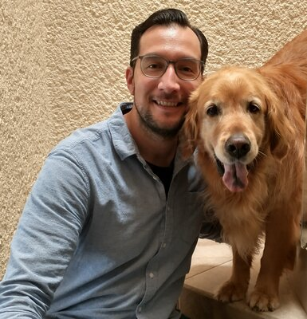
Luis D. Verde Arregoitia
Técnico Titular A, SNI I
Instituto de Ecología, A.C. (INECOL)
Intereses: Mamíferos · Ecomorfología · Macroecología · Programación en R · Ciencia de datos
Mastozóologo y científico de la conservación especializado en la ecología y evolución de mamíferos pequeños.
Investigadores
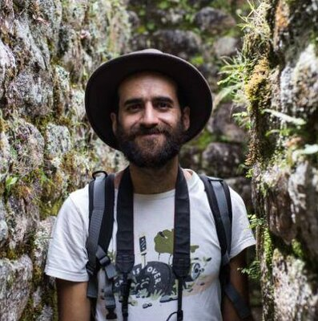
Gabriel Massaine Moulatlet
Investigador Posdoctoral
Instituto de Ecología, A.C. (INECOL)
Intereses: Ecología numérica · Macroecología · Gradientes de diversidad · Evaluaciones de impacto ambiental
Biólogo con amplio interés en ecología tropical, con experiencia en bosques amazónicos y los Andes de Ecuador.

Carmen Galán Acedo
Investigadora Visitante
UNAM-Morelia
Intereses: Ecología del paisaje · Primatología · Patrones espaciales
Doctora en Ciencias Biológicas por la UNAM. Estudia los efectos del cambio de uso de suelo en la biodiversidad, en particular en primates, a escalas regional y global.
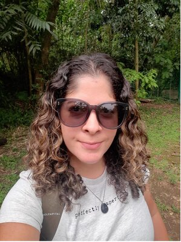
Jessica Falcão
Investigadora Posdoctoral
Instituto de Ecología, A.C. (INECOL)
Intereses: Plantas exóticas · Ecología de invasiones · Interacciones insecto–planta
Estudia la estructura filogenética de ensamblajes de plantas exóticas y nativas en bosques mesófilos de montaña en México.
Estudiantes de posgrado
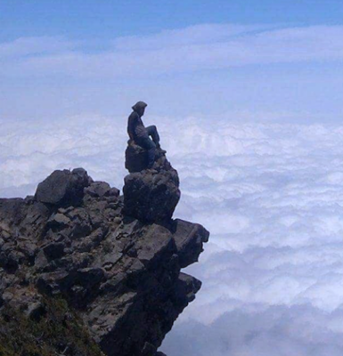
Alejandro Sánchez Barradas
Estudiante de Doctorado
Instituto de Ecología, A.C. (INECOL)
Intereses: Interacciones bióticas · Carnívoros · Macroecología
Estudia cómo el número de especies presa disponibles y el rango de tallas corporales influyen en la riqueza de mamíferos carnívoros.

Carlos Marín
Estudiante de Doctorado
Instituto de Ecología, A.C. (INECOL)
Intereses: Lagartijas · Herpetología · Macroevolución · Sistemática de anfibios y reptiles
Estudia los factores ambientales e históricos que moldean los gradientes de biodiversidad, con enfoque en lagartijas neotropicales.

Daniel Valencia
Estudiante de Doctorado
Instituto de Ecología, A.C. (INECOL)
Intereses: Peces de agua dulce · Rangos geográficos · Macroecología
Estudia los patrones de distribución y riqueza de especies a gran escala, con énfasis en peces de agua dulce neotropicales.
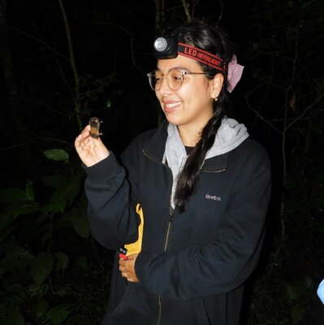
Diana M. Ochoa-Sanz
Estudiante de Doctorado
Instituto de Ecología, A.C. (INECOL)
Intereses: Murciélagos · Ecología trófica · Macroevolución
Su investigación doctoral se enfoca en las dimensiones de la especialización dietaria y su relación con los patrones de rareza en murciélagos filostómidos.
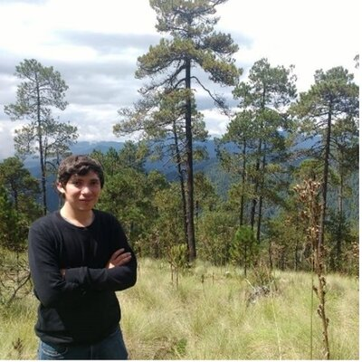
Gerardo Dirzo Uribe
Estudiante de Doctorado
Instituto de Ecología, A.C. (INECOL)
Intereses: Murciélagos · Mamíferos · Macroecología
Estudia la relación entre el nicho Grinnelliano y Eltoniano con los patrones de riqueza y distribución geográfica de murciélagos filostómidos.
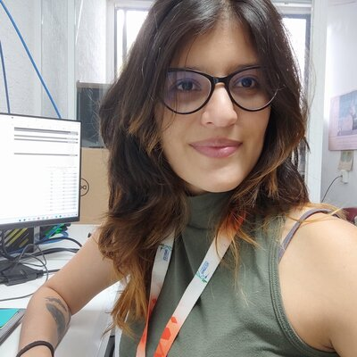
Juliana Herrera Pérez
Estudiante de Doctorado
Instituto de Ecología, A.C. (INECOL)
Intereses: Ictiología · Macroecología · Macroevolución
Estudia cómo los rasgos morfológicos y ecológicos de peces de agua dulce han influido en su diversificación a escala global.

Kevin Lopez Reyes
Estudiante de Doctorado
Facultad de Ciencias, UNAM (Yucatán)
Intereses: Herpetología · Nicho ecológico · Gradientes de riqueza
Estudia los factores evolutivos, ecológicos y geográficos que determinan los patrones de riqueza de lagartijas espinosas (Sceloporus).

Martin Cabrera
Estudiante de Doctorado
Instituto de Ecología, A.C. (INECOL)
Intereses: Mamíferos · Murciélagos · Ecomorfología · Macroecología · Macroevolución
Describe y analiza el modo de evolución y las tasas de cambio de la morfología alar y la señal acústica en murciélagos a escala global.

Roberto Ruiz
Estudiante de Doctorado
Instituto de Ecología, A.C. (INECOL)
Intereses: Murciélagos · Bioacústica · Macroecología · Ecología del paisaje · Divulgación científica
Estudia los vacíos de conocimiento en los rasgos funcionales de murciélagos y su impacto en la macroecología y conservación.

Monserrat Juárez
Estudiante de Maestría
Instituto de Ecología, A.C. (INECOL)
Intereses: Carnívoros · Impacto antrópico · Macroecología
Evalúa los patrones espaciales de diferentes dimensiones de la diversidad de carnívoros y los factores ambientales y antrópicos que los determinan.
Alumni
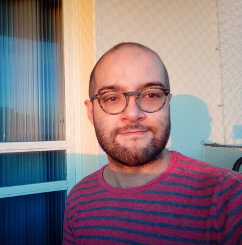
Egon Luis Vilela do Valle
Alumni de Doctorado — Universidade Federal de Goiás, Brasil
Intereses: Macroecología · Evolución · Murciélagos · Bioacústica
Estudió el papel de la evolución en el tamaño del rango geográfico, el nicho climático y la capacidad de dispersión en el orden Chiroptera.
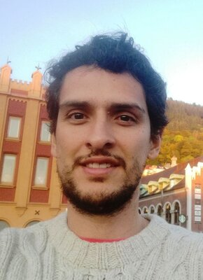
Juan D. Carvajal-Quintero
PhD 2020 — Instituto de Ecología, A.C. (INECOL)
Intereses: Sistemas de agua dulce · Peces · Macroecología
Actualmente investigador posdoctoral en iDiv (Alemania). Su tesis abordó los determinantes del rango geográfico en peces de agua dulce.
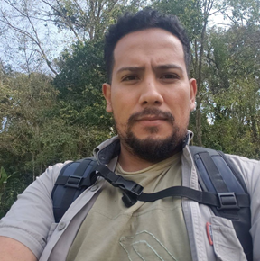
Erick J. Corro
PhD 2022 — Instituto de Ecología, A.C. (INECOL)
Intereses: Interacciones bióticas · Estadística · Patrones espaciales
Actualmente profesor de la Universidad Veracruzana, campus Córdoba.
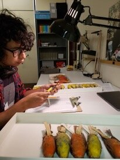
Axel Arango
Alumni de Doctorado — Instituto de Ecología, A.C. (INECOL)
Intereses: Biogeografía · Aves · Macroevolución
Estudió los efectos de las capacidades de dispersión de las familias Emberizoidea del Nuevo Mundo en sus tasas de diversificación.
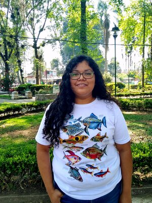
Ana Berenice García Andrade
Alumni de Doctorado — Instituto de Ecología, A.C. (INECOL)
Intereses: Ictiología · Poecílidos · Macroecología · Macroevolución
Estudió los patrones de diversidad de la familia Poeciliidae bajo un enfoque macroecológico y macroevolutivo.
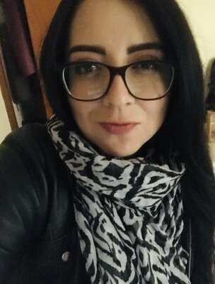
Citlalli Edith Esparza Estrada
Alumni de Doctorado — Instituto de Ecología, A.C. (INECOL)
Intereses: Herpetología · Víboras · Biogeografía · Macroecología
Estudió los patrones macroecológicos y macroevolutivos de la distribución de víboras.
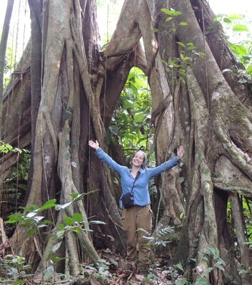
Laura Saldívar Burrola
Alumni de Maestría — Instituto de Ecología, A.C. (INECOL)
Intereses: Mastozoología · Ecología del paisaje · Macroecología
Investigó cómo dos especies de primates (familia Atelidae) responden a la deforestación en selvas tropicales del sureste de México.